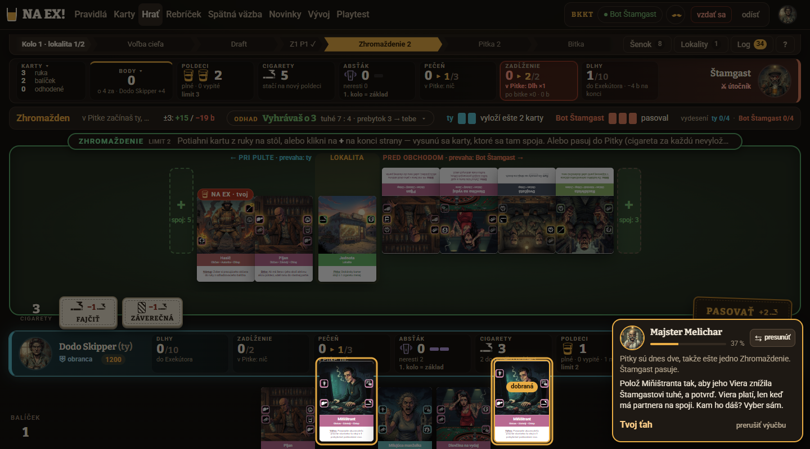
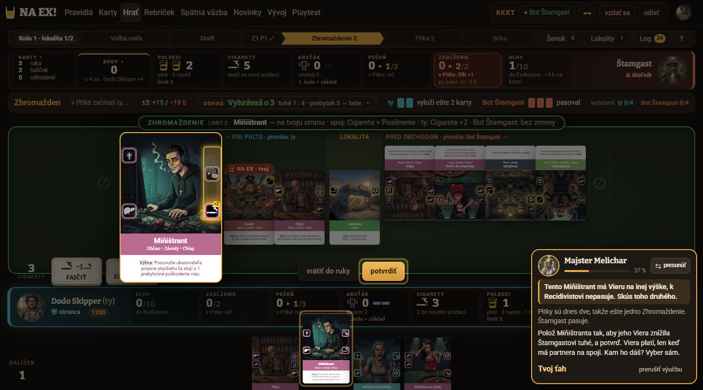
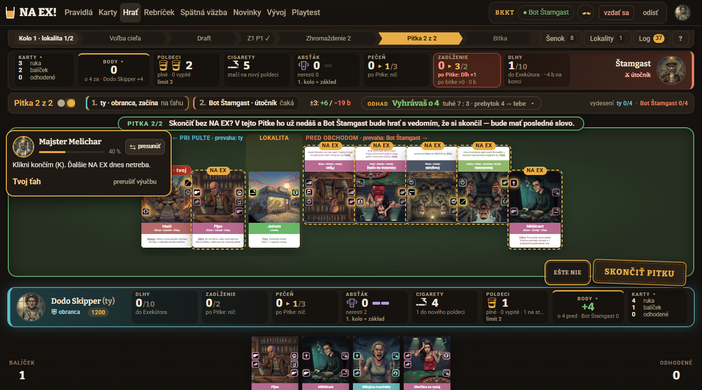
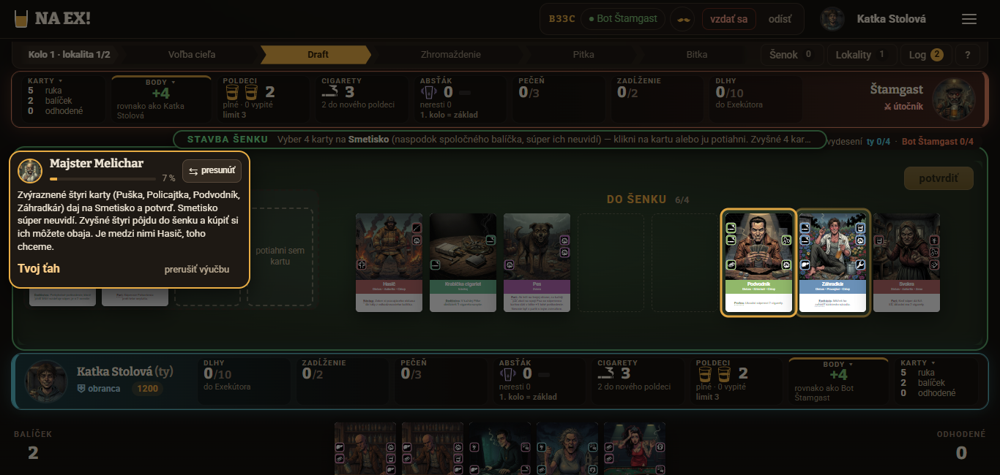
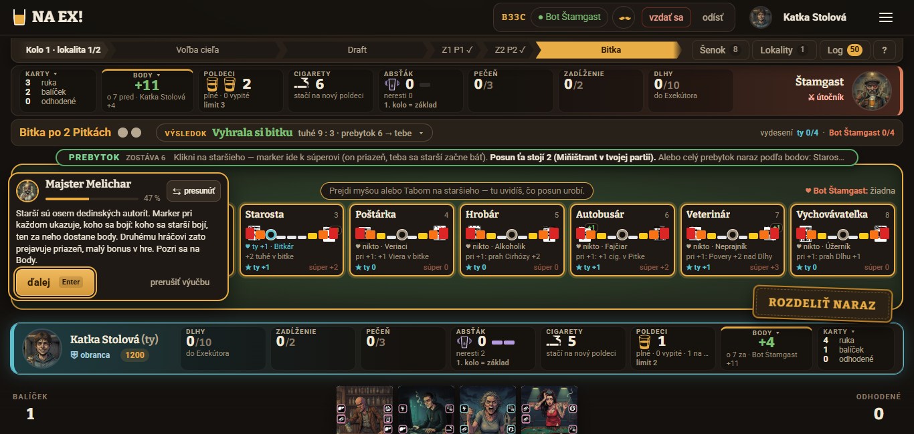
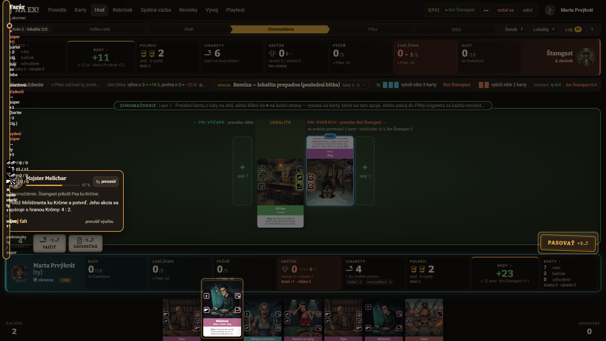

Playtest výučby Prvá hra, kolo 2 · 20261023-183417
1. Verdikt
Áno po opravách, ale cieľ 2. kola nie je splnený (dva z troch cieľov nesplnené, tretí splnený s výhradou). Výučba sa oproti 1. kolu výrazne zlepšila: priemer V1–V10 vzrástol zo 4,7 na 6,3, test pochopenia z 8 na 14/24 úplne správnych odpovedí, odmietnutia servera zo 15 na 2 a všetci traja dokončili všetkých 83 krokov za 11–13 minút. K cieľu (priemer ≥ 7, test ≥ 18/24) však chýba 0,7 bodu a 4 odpovede. Najslabšie zostáva to, čo bolo slabé aj minule: bublina zakrýva stôl, starší nik nepochopil a kroky, kde si hráč „vyberá sám“, sú hádanky.
- Starší a cieľ hry sa nenaučili (otázky 1 a 6: 0 z 6 odpovedí úplne správne; otázka 8 „čo by som urobil inak“ tiež 0 z 3). Chýba veta o okamžitej výhre vydesením, jasný smer markera a ukážka „kto sa koho bojí“; kroky starších sú navyše prekryté bublinou a polovica z nich beží automaticky.
- Bublina Melichara zakrýva presne to, o čom hovorí (3 z 3: Smetisko v kroku 6, starší v krokoch 39–43, 60–62 a 79, šenok, spodok Farára) a dĺžka automatických krokov (47–55, 62–64, 72–73, 77–78) nedovolí text prečítať. Bublina sa vyhýba len zvýrazneným prvkom, nie miestam, o ktorých práve hovorí.
- Krok 31 („Polož Miňištranta… vyber sám“) zasekol všetkých troch (9–12 akcií, 75–100 s, najdlhší krok výučby): dve rovnaké karty v ruke sa líšia výškou ikony Viery, svietia obe a správna je len jedna, a to na súperovu stranu. Ťahanie kariet na „+“ pri súperovi navyše v jednom rozlíšení mlčky nezabralo (viď 7).
2. Porovnanie s 1. kolom a splnenie cieľa
1. kolo: relácia playtest/vyucba-20261023-161148 (scenár 70 krokov, kód 1f1bcc3, rozbitý CSS). Rovnaká trojica postáv, test sa hodnotil podľa docs/PRAVIDLA.md rovnako prísne: „správne“ = zodpovedané bez podstatnej chyby a bez medzery, ktorú v 1. kole označili ako chýbajúcu.
6,3 z 10
Cieľ 1: priemer V1–V10 ≥ 7. Chýba 0,7. Katka 7,1 (cieľ by splnila sama), Dodo 6,4, Marta 5,4. Aj keby Marta dosiahla 7,0, priemer by bol 6,8 — zlepšiť sa musia aspoň dvaja z troch.
14 z 24
Cieľ 2: test ≥ 18/24 úplne správne (1. kolo 8/24). Päť úplne správnych odpovedí mali Katka a Dodo, štyri Marta; zvyšok „čiastočne“, nik „zle“ ani „nevie“. Pri miernejšom čítaní (otázka 1 bez okamžitej výhry, otázka 2 u Marty s „Pitka raz až dvakrát“, otázka 8 u Katky) by to bolo 19/24, teda na hrane — ale prísna hranica z 1. kola dáva 14.
0 / 2 / 0
Cieľ 3: najviac 1 odmietnutie servera na krok. Katka 0, Marta 0, Dodo 2, obe na kroku 56 (
k40): zámerne klikol 2× na svietiace PASOVAŤ („Takto nie — ešte chýba: polož kartu „Miňištrant“ na svoju stranu línie; toto teraz nie: pasuj.“). Formálne 2 na kroku, vecne 0 nezámerných (1. kolo 7/6/2).Pozor na to, čo toto číslo neukazuje: odmietnutia servera nemerajú zaseknutie. Krok 31 mal 12/10/9 akcií bez jedinej hlášky servera, lebo zlé voľby ošetruje klient (náhľad, rada Melichara), nie server. Marta si k testu napísala „z 7 otázok som vedela 1, 2, 5, 7“: odpovedala na všetkých 8 otázok (8. „čo by som urobila inak“ do počtu nezarátala); podľa kontroly proti pravidlám vedela úplne 3, 4, 5, 7 (otázky 3 a 4 podcenila, 2 nadhodnotila).
Známky V1–V10: kolo 1 → kolo 2
| Kritérium | Katka | Dodo | Marta | Priemer 1. kolo | Priemer 2. kolo | Zmena |
|---|---|---|---|---|---|---|
| V1 Pochopenie hry | 4 → 7 | 4 → 6 | 4 → 6 | 4,0 | 6,3 | +2,3 |
| V2 Jasnosť pokynov | 5 → 8 | 4 → 7 | 6 → 5 | 5,0 | 6,7 | +1,7 |
| V3 Vysvetlenie „prečo“ | 3 → 8 | 5 → 7 | 5 → 5 | 4,3 | 6,7 | +2,3 |
| V4 Bublina Melichara | 4 → 6 | 3 → 6 | 3 → 4 | 3,3 | 5,3 | +2,0 |
| V5 Zvýraznenie | 5 → 7 | 6 → 6 | 7 → 6 | 6,0 | 6,3 | +0,3 |
| V6 Ovládanie | 4 → 7 | 4 → 6 | 5 → 6 | 4,3 | 6,3 | +2,0 |
| V7 Tempo a dĺžka | 5 → 7 | 4 → 6 | 5 → 5 | 4,7 | 6,0 | +1,3 |
| V8 Tón a postava Melichara | 6 → 7 | 7 → 8 | 7 → 8 | 6,7 | 7,7 | +1,0 |
| V9 Čitateľnosť stola | 3 → 6 | 4 → 5 | 4 → 3 | 3,7 | 4,7 | +1,0 |
| V10 Chuť hrať | 5 → 8 | 5 → 7 | 6 → 6 | 5,3 | 7,0 | +1,7 |
| Priemer V1–V10 | 4,4 → 7,1 | 4,6 → 6,4 | 5,2 → 5,4 | 4,7 | 6,3 | +1,6 |
Najviac vzrástli V1 pochopenie a V3 „prečo“ (obe +2,3), potom V4 bublina a V6 ovládanie (+2,0); najmenej V5 zvýraznenie (+0,3), V8 tón a V9 čitateľnosť stola (obe +1,0). V9 (4,7) a V4 (5,3) sú najnižšie a V9 ťahá najmä Marta (3 pri rozlíšení 1920×1080, kde sú karty malé).
Test pochopenia po otázkach: kolo 1 → kolo 2
S = úplne správne, Č = čiastočne; poradie Katka, Dodo, Marta. Dôvody sú v sekcii 5.
| Otázka | 1. kolo | 2. kolo | Zmena |
|---|---|---|---|
| 1 Cieľ hry | S Č Č (1/3) | Č Č Č (0/3) | -1 |
| 2 Priebeh kola | S Č Č (1/3) | S S Č (2/3) | +1 |
| 3 Zhromaždenie | Č Č Č (0/3) | S S S (3/3) | +3 |
| 4 Pitka a NA EX | Č S Č (1/3) | S S S (3/3) | +2 |
| 5 Bitka | Č S S (2/3) | S S S (3/3) | +1 |
| 6 Starší | Č Č Č (0/3) | Č Č Č (0/3) | 0 |
| 7 Poldeci a cigarety | S S S (3/3) | S S S (3/3) | 0 |
| 8 Čo by urobil inak | Č Č Č (0/3) | Č Č Č (0/3) | 0 |
| Spolu | 8/24 | 14/24 | +6 |
Ostatné ukazovatele
| Ukazovateľ | 1. kolo | 2. kolo |
|---|---|---|
| Kroky scenára | 70 | 83 |
| Dĺžka (Katka / Dodo / Marta) | 16,7 / 11,8 / 11,6 min | 11,1 / 12,5 / 12,8 min |
| Akcie | 162 / 140 / 113 | 113 / 126 / 111 |
| Odmietnutia servera | 7 / 6 / 2 (až 6× na kroku 17) | 0 / 2 / 0 |
| Najdlhší krok | krok 17: 265 s, 40 akcií (Katka) | krok 31: 75 / 100 / 83 s, 12 / 10 / 9 akcií |
| Sebahodnotenie „koľko viem“ | všetci ~35 % | 65 % / 60 % / 55 % |
| Kontrolné otázky počas výučby (správne napoprvé) | nebolo | Katka 4/4, Dodo 4/4, Marta 3/4 (preklik číslom) |
| Rozhodnutia „vyber sám“ správne napoprvé | nebolo | krok 31: 0/3, krok 65: 0/3 (Dodo zámerne), krok 70: 2/3, krok 74: 3/3 |
Čo z 1. kola je opravené
| Nález z 1. kola | Stav v 2. kole |
|---|---|
| Rozbitý CSS (3/3) | Opravené, nikto ho nehlásil. |
| Potvrdenie viacerých kariet naraz (15 chýb servera, kroky 17, 48, 58) | Opravené: ťah po jednej karte, 2 odmietnutia (obe zámerné), nik sa na tom nezasekol. |
| Bublina presvitá, 133 slov naraz | Opravené: najdlhšia bublina má 38 slov, nikto nehlásil presvitanie. Ostáva zakrývanie (3/3). |
| Chýbajúce zvýraznenie a pokyn (kroky 43, 50) | Už sa nehlási. Nové: zvýraznenie baru v kroku 4 nesvieti (Dodo, Marta), ikona Viery nie je zvýraznená (Katka, Dodo, Marta). |
| Obrazovka starších ostane otvorená, Smetisko sa posúva | Nehlásené. Nové: tooltip staršieho visí (Katka, Dodo), rozpadnutý popup (Marta). |
| Husté kroky a pojmy bez vysvetlenia | Čiastočne: texty sú kratšie, ale poldeci, šenok, Smetisko, tuhé, prebytok, Dlh, Absťák, Pohoršenie, „vydesený“ sa stále použijú skôr, než sa vysvetlia (3/3, najviac Marta). |
| Dĺžka a tempo | 83 krokov za 12 minút; druhé kolo „hra ťahá za teba“ ocenili Katka aj Dodo, Marta ho nestíha čítať. |
3. Nováčikovia
| Postava | Rozlíšenie | Dokončil | Dĺžka | Akcií | Chyby servera | Test (úplne správne) | Sebahodnotenie |
|---|---|---|---|---|---|---|---|
| Katka Stolová — projektová manažérka, systematická (zameranie: pochopenie hry) | 1366×650 | áno, 83 z 83 | 11,1 min | 113 | 0 | 5 z 8 | 65 % |
| Dodo Skipper — študent, netrpezlivý (zameranie: ovládanie a tempo) | 1440×800 | áno, 83 z 83 | 12,5 min | 126 | 2 (obe na kroku 56, zámerné) | 5 z 8 | 60 % |
| Marta Prvýkrát — učiteľka na dôchodku, poctivá (zameranie: zrozumiteľnosť textu) | 1920×1080 | áno, 83 z 83 | 12,8 min | 111 | 0 | 4 z 8 | 55 % |
4. Známky V1–V10
| Kritérium | Katka | Dodo | Marta | Priemer ▾ |
|---|---|---|---|---|
| V1 Pochopenie hry | 7Katka: Slučku a „prečo“ NA EX (krok 28) chápem; ikony akcií (Rana/Viera/Petelica) a absťák/zadlženie som sa nenaučila rozlišovať. | 6Dodo: Základná slučka sedí, ale starší a pečeň/Absťák zostali hmlisté. | 6Marta: Na konci viem cieľ, poradie kola, NA EX aj bitku. Chýba istota pri starších a bodovaní (kroky 39–44, 77–79). | 6,3 |
| V2 Jasnosť pokynov | 8Katka: Takmer vždy bolo jasné čo, kam; krok 31 (Miňištrant „vyber sám“) ma zasekol na 12 akcií. | 7Dodo: Pokyn vždy konkrétny (Hasič, Miňištrant), ale kroky 31, 57, 70 ma zasekli. | 5Marta: Väčšina je jasná („Klikni na Farára“, „Polož Hasiča ku Krčme“). Krok 31 a 70 boli hádanky bez návodu. | 6,7 |
| V3 Vysvetlenie „prečo“ | 8Katka: Krok 28 (cena NA EX = pečeň) a odpoveď o Farárovi boli výborné; „Skončiť Pitku“, „Vrátiť“ a smer markera starších vysvetlené nie. | 7Dodo: „NA EX nie je zadarmo“, „Petelica bez páru sa zíde“ super; Smetisko a Absťák bez dôvodu. | 5Marta: Dobre: prečo NA EX nie je zadarmo (28). Slabo: prečo pasujem (20), prečo „odpovedať kartou“ (62–65, 74). | 6,7 |
| V4 Bublina Melichara | 6Katka: Čitateľná, ale na krokoch 6 (Smetisko), 39 (starší) a 79 (rozpis bodov) zakrýva presne to, o čom hovorí; krok 75 je hustý. | 6Dodo: Čitateľná, no zakrýva Smetisko, šenok, starších; lupa kariet ju prekrýva (kroky 40, 74). | 4Marta: Text je čitateľný, ale bublina sa pohybuje, často zakrýva starších, Farára (krok 40) alebo moje lišty; pri rýchlych krokoch (47–55, 62–64) som nestihla čítať. | 5,3 |
| V5 Zvýraznenie | 7Katka: Karty a tlačidlá svietia presne; občas dve zvýraznenia naraz (karta + Pasovať, krok 57) a ikona Viery nie je zvýraznená vôbec. | 6Dodo: Karty fungujú; PASOVAŤ svieti, keď ho nemám klikať; zvýraznenie baru v kroku 4 chýbalo. | 6Marta: Tlačidlá a karty (Pasovať, Končím, NA EX!) fungujú výborne. „Pozri sa na Body“ (39, 79) bez zvýraznenia; dva zvýraznené Miňištranty bez vysvetlenia. | 6,3 |
| V6 Ovládanie | 7Katka: Ťahanie na „+“ a náhľad v pásiku je skvelý; potvrdzovanie pasu/končím/Skončiť Pitku sú 2–3 kliky. | 6Dodo: Skratky P/K/N/Enter/1–3 výborné. Kladenie na súperovu stranu je skryté a drag tam mlčky zlyhá; karty sa posúvajú pod myšou. | 6Marta: Klik na kartu a „+“ fungoval; ťahanie z ruky zlyhalo pri Hasičovi (krok 18, 2×). Zlý ťah výučba opravila vecne. | 6,3 |
| V7 Tempo a dĺžka | 7Katka: 83 krokov je dosť, ale „hra ťahá za teba“ od 2. kola je dobrý ťah; čakanie na Štamgasta 3–5 s opakovane. | 6Dodo: 83 krokov, 126 akcií; na začiatku nuda z textu, v druhom kole automatika ušetrila čas. | 5Marta: 83 krokov je veľa, hoci vtipných. Úvod (1–4) štyri odseky bez akcie, stred (46–56) beží sám príliš rýchlo, druhé kolo opakuje prvé. | 6,0 |
| V8 Tón a postava Melichara | 7Katka: Vecný, trochu suchý; humor je skromný („Štamgast sa z toho vyspí“). Chýba osobnosť. | 8Dodo: Stručný, vtipný („Štamgast sa vyspí“), reaguje na zlé ťahy konkrétne. | 8Marta: Krčma, Štamgast, „Na zdravie!“. Sympatické, neotravné. Drobnosť: mužské „Vedel si?“ v kroku 82 oproti ženskému „Vyhrala si“. | 7,7 |
| V9 Čitateľnosť stola | 6Katka: Veľa čísel a pásov naraz (poldeci, pečeň, absťák, zadlženie, dlhy, odhad, vydesenie); krok 1 vysvetlil len cieľ, nie pohľad na stôl. | 5Dodo: Veľa pásov hore (odhad, ±3, vydesenie), 8 starších s ikonami bez vysvetlenia; skóre +23/+11 nejasné. | 3Marta: Veľa čísel a panelov naraz, text na kartách ~8 px nečitateľný, súperove karty hore nohami, pokyn hore orezaný trojbodkou, obrazovka starších preplnená drobným písmom. | 4,7 |
| V10 Chuť hrať | 8Katka: Víťazstvo 45:11 je motivujúce a chcem skúsiť sama; partia s človekom bude hustejšia. | 7Dodo: Rýchle NA EX a víťazstvo 45:11 bavili; chcem skúsiť bota. | 6Marta: Chcela by som to skúsiť s vnukom pre humor a obrázky; obávam sa množstva pravidiel. | 7,0 |
Zhodli sa na najlepšom: tón Melichara (V8: 7/8/8) a „prečo“ pri NA EX (krok 28); na najslabšom: čitateľnosť stola (V9: 6/5/3) a bublina (V4: 6/6/4). Rozišli sa v jasnosti pokynov (V2: Katka 8, Marta 5): Katka na kroku 31 vyriešila hádanku po 12 akciách pomocou náhľadu v pásiku, Marta po 9 a označila ju spolu s krokom 70 za „hádanky bez návodu“. Marta (poctivá pomalá čitateľka, 1920×1080) je o 1–2 body pod ostatnými v bubline (4), tempe (5) a čitateľnosti stola (3); Katka (systematická) hodnotí najlepšie, jej zameranie je pochopenie, a to sa jej darilo (V3 8). Dodo (netrpezlivý) oceňuje skratky P/K/N/Enter/1–3 a trpí tam, kde chýbajú (drag na súperovu stranu).
5. Test pochopenia
Odpovede sú overené proti docs/PRAVIDLA.md (§1, §5, §7, §8, §9, §10) rovnakým meradlom ako v 1. kole. Spolu: 14 správne, 10 čiastočne, 0 zle, 0 nevie z 24 (1. kolo 8 / 16 / 0 / 0). Nikto neodpovedal zle; chýbajú len medzery, ktoré sú rovnaké u všetkých troch.
| Otázka | Katka | Dodo | Marta |
|---|---|---|---|
| 1 Cieľ hry | čiastočnebody: lokality, starší („ktorých vydesím“), cigarety, Dlhy a Cirhóza berú; okamžitú výhru vydesením nespomenula | čiastočnebody správne; okamžitú výhru vydesením nespomenul, ako sa body rátajú nevie | čiastočnebody správne; vydesenie a ako sa body rátajú nespomenula |
| 2 Priebeh kola | správnecieľ → šenok → Zhromaždenie → Pitka → ďalšie Z/P podľa lokality → bitka → prebytok | správnecieľ → draft → Zhromaždenie → Pitka (1–4×) → bitka → prebytok starším | čiastočneporadie správne, ale „Pitka raz až dvakrát“ (správne 1–4, §7) |
| 3 Zhromaždenie | správnestriedavo vykladá, spoj v rovnakej výške platí, osamotená akcia nie, limit plné poldeci + 1, pas = cigareta | správnestriedavo vľavo/vpravo, spojené platia a osamotené nič, pasovanie za cigarety | správnevľavo/vpravo, spoj v rovnakej výške, pas za cigaretu, limit plné + 1 |
| 4 Pitka a NA EX | správneNA EX = plný poldeci na kartu, zruší spojené a zdvojí osamotené; pečeň → Cirhóza; Krčma núti; súper odpovie kartou | správneNA EX zruší spojené a zdvojí osamotené; stojí poldeci, plní pečeň; Krčma povinné | správneNA EX zruší spojené a zdvojí osamotené; stojí poldeci a plní pečeň → Cirhóza |
| 5 Bitka | správnetuhé (Rana 1, Pecka 2, Petelica 3), viac berie lokalitu, rovnosť = sekera; nevie Dlhy/Pohoršenie | správneviac tuhého vyhrá, rovnosť = sekera, prebytok starším | správnetuhé z platných akcií, viac berie, rovnosť = sekera |
| 6 Starší | čiastočnemarker, prebytok posúva, žltá/oranžová/červená → strach; „dá mi body“; smer markera si nepamätá | čiastočnevíťaz tlačí marker k porazenému, strach → body, súper priazeň; ako prebytok → kroky nevie | čiastočne8 autorít so stupnicou, strach dáva body, súperovi priazeň; kedy je „vydesený“ nevie |
| 7 Poldeci a cigarety | správnepoldeci = limit a NA EX; cigarety = šenok, fajčenie, nový poldeci, body | správnepoldeci = limit a NA EX; cigarety = šenok, fajčenie, nový poldeci | správnepoldeci = limit a čím sa platí NA EX; cigarety = šenok, fajčenie, pas |
| 8 Čo by urobil inak | čiastočnepozorne na pečeň, rôzne lokality, ktorého staršieho dotlačiť — všeobecné, bez vlastného plánu | čiastočnenedávať NA EX bez rozmyslu na pečeň, skúsiť Smetisko a patronát; polovica odpovede o čítaní | čiastočnečítať karty, sledovať pečeň, nebyť pasívna; „vlastnú taktiku zatiaľ neviem“ |
Prečo sú otázky 1, 6 a 8 stále „čiastočne“
- 1 Cieľ hry (0/3): všetci uviedli body z lokalít, starších a cigariet a že Dlhy a Cirhóza body berú — to je správne. V 1. kole sa „správne“ udelilo len za zmienku o okamžitej výhre vydesením aspoň polovice starších a udržaním do konca nasledujúceho kola (§1), takže tu je to „čiastočne“. Scenár v3 túto vetu neobsahuje vôbec (
i-ciel,i-zhrnutie), preto ju nemohol nikto vedieť: oprava je jedna veta. - 6 Starší (0/3): všetci vedia „marker, prebytok posúva, strach dáva body, súperovi priazeň“. Nik nevie smer („k súperovi“ = jemu priazeň a staršieho sa bojím ja), úrovne strachu (žltá 1, oranžová 2, červená 3, §9) ani kedy je starší „vydesený“. Zjednodušenie výučby „koho sa starší bojí, ten za neho dostane body“ nie je chyba (zónové podmienky scorecardov, §10), ale ďalšie scorecardové podmienky (lokality, cigarety, Dlhy) boduje obom hráčom — to výučba nepovie. Kroky 40–43 sú zároveň tie, ktoré bublina zakrýva a v ktorých hra za hráča posúva marker sama (kroky 41–42).
- 8 Čo by som urobil inak (0/3): nik nemá vlastný plán. Odpovede sú „sledovala by som pečeň“, „skúsila by som iné lokality“, „čítať karty“. Výučba končí zhrnutím pravidiel (kroky 80–81), nie plánom do prvej partie.
- Otázka 2 u Marty: napísala „Pitka raz až dvakrát podľa lokality“; správne 1–4 (§7), a výučba v kroku 3 hovorí „raz až štyrikrát“.
Čo výučba naučila spoľahlivo
- Zhromaždenie (3/3; v 1. kole 0/3): spoj v rovnakej výške platí, osamotená akcia nie, limit = plné poldeci + 1, pas za cigaretu. Pomohla kontrolná otázka v kroku 16 (3/3 správne napoprvé).
- Pitka a NA EX (3/3; v 1. kole 1/3): zruší spojené, zdvojí osamotené, stojí poldeci a plní pečeň. Krok 28 „NA EX nie je zadarmo“ ocenili všetci.
- Bitka (3/3) a poldeci/cigarety (3/3), priebeh kola (2/3).
Čo nenaučila nikoho
- Okamžitú výhru vydesením, smer a úrovne strachu starších, čo je „prebytok“ (spomenie sa v kroku 37 a vysvetlí až v 40; Marta), Dlh/Absťák/Pohoršenie (Katka, Dodo, Marta všetci v „čo chýba“), ako sa body rátajú na konci (rozpis v kroku 79 je vo vete s 8 číslami).
6. Mapa krokov
Bunka = jasnosť z denníka (1–5; „–“ = bez záznamu; denníky spájajú susedné kroky, takže hodnota platí pre celý rozsah, ±1 krok). Zelená: bez chyby, ≤ 3 akcie, žltá: chyba servera alebo viac ako 3 akcie, červená ⚠: zaseknutie podľa denníka, sivá: krok bez akcie hráča (informačný alebo automatický). Kurzor nad bunkou ukáže akcie, chyby a sekundy.
| Krok | id | Melichar | Katka | Dodo | Marta |
|---|---|---|---|---|---|
| 1 | i-vitaj | Vitaj v krčme! Som majster Melichar. Zahráš si so Štamgastom… | 5 | 5 | 5 |
| 2 | i-ciel | Vyhrá ten, kto má na konci viac bodov. Body dávajú vybojovan… | 4 | 4 | 3 |
| 3 | i-kolo | Kolo je bitka o jednu lokalitu. Obranca vyberie cieľ, obaja … | 3 | 3 | 3 |
| 4 | i-bar | Dole je tvoj bar. Plné poldeci určujú, koľko kariet vyložíš:… | 4 | 3 | 3 |
| 5 | k0 | Vyber Jednotu a potvrď ju, ako leží. Si obranca a ten cieľ v… | 4 | 4 | 3 |
| 6 | k1 | Zvýraznené štyri karty (Puška, Policajtka, Podvodník, Záhrad… | 3 | 4 | 2 |
| 7 | k2 | (krok Štamgasta / hry bez textu) | 4 | 4 | 3 |
| 8 | k3 | Útočník kupuje prvý. Karta stojí cigaretu. Štamgast si kúpil… | 4 | 4 | 3 |
| 9 | k4 | Kúp Hasiča. Má Petelicu. Rana je 1 tuhé poškodenie, Pecka 2 … | 3 | 3 | 3 |
| 10 | k5 | Štamgast kúpil Recidivistu, aj on má Petelicu. | 4 | 5 | 3 |
| 11 | k6 | Klikni už neťahám (P). Ostatné cigarety si nechaj, zídu sa. | 4 | 5 | 4 |
| 12 | k7 | (krok Štamgasta / hry bez textu) | – | 5 | 3 |
| 13 | k8 | Zhromaždenie: striedavo vykladáte karty k lokalite, útočník … | 4 | 3 | 3 |
| 14 | i-spoj | Pozri, ako Štamgast priložil Pijana k Jednote. Na hranách ka… | 4 | 4 | 3 |
| 15 | k9 | Polož Pijana k Jednote a potvrď. Jeho Rana sa na spoji stret… | 5 | 4 | 4 |
| 16 | q-spoj | Prečo Pijanova Rana platí? | 5 | 5 | 5 |
| 17 | k10 | Štamgast pridal Dievčinu na vydaj. Má Pohoršenie a v bitke m… | 4 | 4 | 3 |
| 18 | k11 | Polož Hasiča za Pijana a potvrď. Jeho Petelica tam nemá pár,… | 4 | 4 | 2 ⚠ |
| 19 | k12 | (krok Štamgasta / hry bez textu) | 4 | 3 | 3 |
| 20 | k13 | Klikni pasovať (P). Za každú kartu, ktorú by si ešte smel vy… | 4 | 3 | 3 |
| 21 | k14 | Štamgast pasuje tiež. | – | 3 | 2 |
| 22 | i-pitka | Pitka! Teraz sa pije. Najsilnejší ťah je NA EX: položíš plný… | 3 | 3 | 2 |
| 23 | k15 | Vyber Hasiča a daj NA EX (N). Jeho Petelica nemá partnera, t… | 4 | 5 | 3 |
| 24 | k16 | Na NA EX smie súper hneď odpovedať jednou kartou. Štamgast v… | 4 | 4 | 3 |
| 25 | k17 | Vyfajči jednu cigaretu: hneď si dobereš kartu z balíčka. Faj… | 4 | 4 | 4 |
| 26 | k18 | Klikni končím (K). Pitku začína obranca a útočník má posledn… | 4 | 4 | 4 |
| 27 | k19 | Pitka sa vyhodnotí. Štamgast dostal Dlh, ten berie body. Ty … | 5 | 4 | 4 |
| 28 | i-cena | NA EX nie je zadarmo. Poldeci sa v bitke vypije a v ďalšom k… | 5 | 4 | 4 |
| 29 | q-naex | Na akú kartu sa NA EX oplatí? | 4 | 5 | 4 |
| 30 | k20 | Pitky sú dnes dve, takže ešte jedno Zhromaždenie. Štamgast p… | – | 2 | 2 |
| 31 | k21 | Polož Miňištranta tak, aby jeho Viera znížila Štamgastovi tu… | 2 ⚠ | 2 ⚠ | 2 ⚠ |
| 32 | k22 | Klikni pasovať (P). | 3 | 3 | 4 |
| 33 | k23 | Klikni končím (K). Ďalšie NA EX dnes netreba. | 3 | 3 | 3 |
| 34 | k24 | Pitka sa vyhodnotí, Štamgast dostal druhý Dlh. | 2 | 2 | 1 |
| 35 | k25 | Bitka! Dievčina na vydaj odišla z hry a spálila oba jeho Dlh… | 2 | 2 | 1 |
| 36 | k26 | A ešte raz. Starosta je teraz v žltom pri tebe a pomáha ti: … | 2 | 2 | 1 |
| 37 | i-bitka | Bitka 9 : 3 pre teba. Ty: Hasič s NA EX 6, Pijan 1 a Bitkár … | 4 | 2 | 2 |
| 38 | q-bitka | Ty máš spojenú Ranu a Pecku, Štamgast Petelicu. Ako dopadne … | 3 | 4 | 4 |
| 39 | i-starsi | Starší sú osem dedinských autorít. Marker pri každom ukazuje… | 3 | 3 | 3 |
| 40 | k27 | Klikni na Farára. Víťaz rozdá prebytok 6: každý bod posunie … | 3 | 3 | 3 |
| 41 | k28 | Hra za teba posúva Farára ďalej. | 3 | 3 | 3 |
| 42 | k29 | A do tretice. Farár je v oranžovom a bojí sa ťa na úrovni dv… | 4 | 3 | 2 |
| 43 | q-starsi | Farár je teraz posunutý k Štamgastovi. Čo z toho máš? | 4 | 3 | 2 |
| 44 | i-kolo2 | Prvé kolo je tvoje. Platia len spojené akcie. V bitke vyhrá … | 4 | 5 | 5 |
| 45 | i-kolo2b | Druhé kolo. Každý si dobral dve karty a jeden poldeci sa dol… | 4 | 4 | 3 |
| 46 | k30 | Ako víťaz si znova obranca a hra vybrala Krčmu. | 3 | 4 | 2 |
| 47 | k31 | (krok Štamgasta / hry bez textu) | 3 | 4 | 2 |
| 48 | k32 | (krok Štamgasta / hry bez textu) | 3 | 4 | 2 |
| 49 | k33 | Štamgast si kúpil Psa. | 3 | 4 | 2 |
| 50 | k34 | Hra ti kúpila Hasiča, ten sa zíde. | 3 | 4 | 2 |
| 51 | k35 | (krok Štamgasta / hry bez textu) | 3 | 4 | 2 |
| 52 | k36 | (krok Štamgasta / hry bez textu) | 3 | 4 | 3 |
| 53 | k37 | (krok Štamgasta / hry bez textu) | 3 | 4 | 3 |
| 54 | k38 | (krok Štamgasta / hry bez textu) | 3 | 4 | 3 |
| 55 | k39 | Zhromaždenie. Štamgast priložil Psa ku Krčme. | 3 | 4 | 3 |
| 56 | k40 | Polož Miňištranta ku Krčme a potvrď. Jeho akcia sa spáruje s… | 4 | 4 | 3 |
| 57 | k41 | Štamgast pridal Pijana: 4 : 3. | 4 | 2 | 3 |
| 58 | k42 | Polož Hasiča na koniec Štamgastovej strany a potvrď. Jeho Pe… | 4 | 2 ⚠ | 4 |
| 59 | k43 | (krok Štamgasta / hry bez textu) | 4 | 4 | 4 |
| 60 | k44 | Pasuješ. | 4 | 4 | 4 |
| 61 | k45 | Vyber Hasiča a daj NA EX (N). Na Krčme musíš. Petelica bez p… | 4 | 4 | 4 |
| 62 | k46 | (krok Štamgasta / hry bez textu) | 4 | 4 | 3 |
| 63 | k47 | (krok Štamgasta / hry bez textu) | 4 | 4 | 3 |
| 64 | k48 | Krčma núti aj Štamgasta: NA EX na vlastného Pijana. Pridá mu… | 3 | 4 | 3 |
| 65 | k49 | Štamgast dal NA EX na vlastného Pijana. Smieš odpovedať jedn… | 3 | 4 | 3 |
| 66 | k50 | Pitka sa vyhodnotí. Štamgast má ďalší Dlh. | 4 | 4 | 4 |
| 67 | k51 | (krok Štamgasta / hry bez textu) | 4 | 4 | 4 |
| 68 | k52 | Polož druhého Miňištranta k sebe na koniec a potvrď. Jeho Vi… | 4 | 4 | 4 |
| 69 | k53 | Pasuješ. | 3 | 4 | 3 |
| 70 | k54 | Krčma ťa núti znova, máš plný poldeci. Na ktorú svoju kartu … | 3 | 3 ⚠ | 3 |
| 71 | k55 | (krok Štamgasta / hry bez textu) | 3 | 3 | 3 |
| 72 | k56 | (krok Štamgasta / hry bez textu) | 3 | 3 | 3 |
| 73 | k57 | Krčma núti aj Štamgasta. Dal NA EX na tvojho prvého Miňištra… | 3 | 3 | 3 |
| 74 | k58 | Štamgast dal NA EX na tvojho Miňištranta. Odpovieš kartou, a… | 3 | 3 | 3 |
| 75 | k59 | Pitka sa vyhodnotí. Tebe pretiekla pečeň a prišla Cirhóza, t… | 3 | 3 | 3 |
| 76 | k60 | Klikni na Farára. Stál na predposlednom mieste od začiatku k… | 3 | 3 | 3 |
| 77 | k61 | Zvyšné body idú Autobusárovi. | 3 | 3 | 3 |
| 78 | k62 | Autobusár je v žltom a začína sa ťa báť. Dva Miňištranty zdr… | 3 | 4 | 3 |
| 79 | i-koniec | Koniec a víťazstvo 45 : 11! Lokality 20, vydesený Farár 15, … | 3 | 4 | 3 |
| 80 | i-zhrnutie | Toto si zober do prvej partie. Cieľ: vyhrávaj lokality a str… | 4 | 4 | 4 |
| 81 | i-zhrnutie2 | V Pitke daj NA EX na kartu so silnou akciou bez partnera, al… | 4 | 4 | 4 |
| 82 | i-vedel-si | Vedel si? Hra má toho viac: za plný poldeci zahráš dve karty… | 4 | 4 | 3 |
| 83 | i-dovidenia | To je celá krčma. Štamgast sa z toho vyspí. Teraz sa skús po… | 4 | 4 | 5 |
7. Zaseknutia
Krok 31 · k21 — Miňištrant tak, aby Viera znížila Štamgastovi tuhé scenárUI výučbyhra?
- Chcel
- Podľa Melichara položiť Miňištranta (kam, má vybrať sám).
- Stalo sa
- 3 z 3 hádali: Katka 12 akcií / 75 s, Dodo 10 / 100 s, Marta 9 / 83 s, bez jedinej hlášky servera. Skúšali súperovu stranu, vlastnú stranu aj druhý Miňištrant; „Skús toho druhého“ prišlo až po potvrdení nesprávnej karty (Dodo snímka 056) a Marte spomínalo Recidivistu, hoci kartu dala na svoju stranu. Dodo: „dve takmer rovnaké karty Miňištrant v ruke bez vysvetlenia rozdielu“, Katka: „ikonu Viery nikto nezvýraznil“.
- Príčina
- Scenár:
volba.kandidatije["ruka:ministrant"], takže svietia obe kópie, ale správna je lenruka:ministrant#2a cieľsuperova. Text neprezrádza ani stranu, ani výšku ikony („Kam ho dáš? Vyber sám“), hoci Viera, spoj a „výška“ sa dovtedy nikde nevysvetlili. UI: ikona Viery a „+“ pri Štamgastovi nesvietia. Hra: drag na súperovu stranu viď nižšie. - Oprava
- Kandidát len
#2; zvýrazniť jeho ikonu Viery a miesto „+“ za Recidivistom; prvá veta: „Polož Miňištranta s Vierou nižšie za Štamgastovho Recidivistu — tam sa Viera spojí s jeho Dlhom a zníži mu tuhé.“ Rozhodnutie zostane, ale kritérium musí byť v texte (inak je to hádanka, nie rozhodnutie).


Ťahanie karty na „+“ mlčky nezabralo — kroky 18, 31, 58 chyba hry (nepotvrdená)UI výučby
- Kto a kde
- Dodo (1440×800): 0 zo 4 ťahaní na súperovu stranu (krok 18 raz, krok 31 trikrát); funguje len klik na „+“ a potom na kartu. Marta (1920×1080): 2 z 2 ťahaní na vlastnú stranu v kroku 18 nezabrali (od okraja ruky, y=1000 a y=960), kliknutie na „+“ a kartu zabralo; vlastné ťahanie v kroku 15 zabralo. Katka (1366×650): ťahanie na súperovu stranu zabralo v kroku 31 (karta 867,574 → 992,343 potvrdená, krok pokročil) aj v kroku 58 (913,574 → 886,344).
- Kód klienta
- Cieľ na súperovej strane existuje:
HernaPlocha.tsx—cieleZdrojapridá každý cieľ zCIELE_VYKLADANIA(vlastna,superova, …), ktorý prejdeplanTahu;koniecStrany(super_)pri ťahaní vykreslímiestoNaKoncisdata-ciel="superova";pustiho prijme (jeCielVykladania). Cieľ sa hľadá cezdocument.elementFromPointpripointerup(useTahanie.ts). Keď cieľ nie je povolený,pustikartu ticho vráti (if (ciel === null || !cieleZdroja(z).has(ciel)) return;) — preto „mlčky“. - Záver
- Nie je to len obmedzenie nástroja (ten istý CDP „ťahaj“ — stlačenie, 15 posunov, pustenie — zabral u Katky aj na súperovu stranu) a nie je to chýbajúci cieľ v kóde. Je to buď chyba hry závislá od rozloženia, alebo kombinácia nástroja s rozložením. Podozrenia (neoverené): pri začatí ťahania sa úzke „+“ (
miestoNaKlik) nahradí plným miestom na kartu (miestoNaKonci) a línia sa preusporiada, Dodo opisuje „po drag-and-drop posúva „+“ miesta“ a „karty sa posúvajú pod myšou“ (hover zdvihne kartu v prekrytej ruke, takže stlačenie myši môže zasiahnuť inú kartu než zamýšľanú). Treba reprodukovať na 1440×800 v kroku 31 a pri zlyhaní zobraziť hlášku „Tu to nejde — klikni na „+“ a potom na kartu“ namiesto ticha. Pre ľudského hráča je ticho horšie ako samotné zlyhanie.
Krok 58 · k42 — Hasič na koniec Štamgastovej strany UI výučby
- Stalo sa
- Dodo 7 akcií / 40 s (klik na kartu, klik na „+“, drag): „chcel som ťahať, ale na súperovu stranu funguje len klik „+“ a potom klik karty (opačné poradie než som skúšal)“; hint je len v pruhu hore. Marta 3 akcie, Katka 2.
- Oprava
- Prvá veta bubliny pri prvom kladení na súperovu stranu (krok 31): „Na súperovu stranu: klikni na „+“ pri Štamgastovi, potom na kartu; alebo kartu potiahni.“ Hint z pruhu hore patrí do bubliny, kam sa pozerá aj Melichar.
Krok 70 · k54 — NA EX, „na ktorú svoju kartu? Vyber sám“ scenárUI výučby
- Stalo sa
- Dodo 6 akcií / 29 s, 3 pokusy (Miňištrant vpravo → zle, „Pijan“ → zle, Miňištrant vľavo → správne); karty sa pri hover posunuli, takže klik zasiahol susednú. Katka 5 akcií / 21 s: „vybrala podľa náhľadu hore (13:4 → 13:2 ▲), bez neho by som hádala“. Marta správne napoprvé, tiež podľa náhľadu. Melichar pri zlej voľbe Dodovi povedal vecne („Viera je spojená, NA EX by ju zrušilo: 13:5“) — to dodo označil za najlepšiu hlášku.
- Oprava
- Doplniť kritérium do textu: „NA EX zdvojí akcie bez partnera a zruší spojené. Hľadaj kartu, ktorej Viera nemá partnera.“ Náhľad „13:4 → 13:2 ▲“ je zachrana, ale je v malom písme v pásiku; zväčšiť a spraviť súčasťou bubliny.
Krok 33 · k23 — „Skončiť Pitku“ po „Končím“ scenárUI výučby
- Stalo sa
- Po stlačení K (Končím) vyskočí potvrdenie „Skončiť bez NA EX? … EŠTE NIE / SKONČIŤ PITKU“, no bublina ďalej hovorí „Klikni končím (K). Ďalšie NA EX dnes netreba“ (Dodo snímka 067, Marta, Katka: „tretí potvrdzovací klik“). Marta chvíľu váhala.
- Oprava
- Text kroku: „Klikni končím a potvrď „Skončiť Pitku“ — ďalšie NA EX dnes netreba, lebo je to druhá Pitka a už máš čo si chcel.“ Zvýrazniť „Skončiť Pitku“ po otvorení potvrdenia.

Krok 18 · k11 — Hasič za Pijana UI výučby
- Stalo sa
- Marta 5 akcií / 40 s: ťahanie z ruky na „+“ nezabralo 2× („+“ svietilo, karta sa nepoložila), pomohol klik na „+“ a potom na kartu; „nováčik by to nevedel, ak by nezačal klikať“. Dodo 4 akcie / 29 s (zámerne zlá strana → hláška „Ešte chýba…, nepatrí“ pri lupe, Melichar mlčal).
- Oprava
- Viď „Ťahanie karty na „+“ mlčky nezabralo“ vyššie. V scenári text „za Pijana“ nepovie, na ktorú stranu — doplniť „na tvoju stranu, vľavo od Pijana“.
Kroky 65 a 74 · k49, k58 — „Odpovieš kartou, alebo nie? Vyber sám“ scenár
- Stalo sa
- Krok 65: Katka a Marta zvolili „bez odpovede“ (viedli 12:5), Dodo zámerne; Melichar odpovedal „Tu sa odpoveď oplatí: tvoj Pijan k Miňištrantovi spojí Ranu aj Vieru. Skús to.“ — najlepšia reakcia na chybu podľa Doda; Katka: otázka „Oplatí sa?“ „bola retorická a vedela odpoveď“; Marta: „nevysvetlilo prečo je to lepšie (čo som stratila)“. Krok 74: všetci správne napoprvé (bez odpovede), Melichar nekomentoval — dobré.
- Oprava
- Do rady po zlom ťahu pridať číslo: „Bez odpovede zostane 12:5, s Pijanom 12:3 — tuhé súpera klesne o 2.“ (čo hráč stratil, nie len čo má urobiť).
Krok 43 · q-starsi — otázka o Farárovi scenár
- Stalo sa
- Katka 26 s, Marta 28 s (Marta omylom kliklo na možnosť 1 — číslo z výpisu, nie z obrazovky — a výučba ju „pekne opravila“). Marta: „„posunutý k Štamgastovi“ pôsobí tak, že ho dostal Štamgast“ — oproti „sa ťa bojí“. Smer markera je zdroj najväčšieho mätenia (Katka aj Marta).
8. UI a UX
Bublina Melichara zakrýva to, o čom hovorí (3/3)
Smetisko v kroku 6 (Katka 007–013, Dodo 010–016, Marta), poslednú kartu šenku v kroku 9 (Dodo 018), prvých dvoch starších pri „Starší sú…“ v kroku 39 (Katka 067, Dodo 069), starších vpravo pri rozpise v kroku 79 (Katka 108), spodok Farára so stupnicou markera v kroku 40 (Marta), Marta aj panel pečene a lišty. Príčina v kóde: skoreMiesta v Vyucba.tsx vyhýba bublinu len zvýrazneným prvkom (váha 50), kartám v línii, pečiatkam a lištám; Smetisko, šenok ani línia starších do skóre nepatria, pokiaľ ich krok nemá v zvyraznit. Bublina má na výber len osem pevných miest (rohy a okraje stola), pri 650 px výšky málo. Marta sa k tomu omylom dotkla tlačidla „presunúť“ (je prvé v poradí a blízko odpovedí; snímky 060, 065), čím bublina prekryla popup Vychovávateľky a pruh „PREBYTOK ZOSTÁVA 6“.


Automatické kroky a tempo čítania (Marta, Dodo)
Kroky 7, 12, 19, 34–35, 42, 47–55, 62–64, 72–73, 77–78 prebehnú samé; Marta: „kroky 47–50 prebehli samé behom pár sekúnd — nič som nemohla prečítať“, Dodo: „kroky 47–49 preleteli bez možnosti prečítať (len 3 s čakanie), nevidel som, čo sa kúpilo a čo bolo na Smetisku“. Bublina medzitým hovorí len „Hra ťahá za teba…“ (kroky 61–62 prázdna) a mení sa. Katka to naopak ocenila („príjemne uvoľnilo“). Rozpor sa dá zjednotiť: automatika áno, ale s jedným „ďalej“ na zhrnutie a s textom, čo hra spravila a prečo.
Zvýraznenia (3/3)
- Krok 4 „Dole je tvoj bar“: scenár zvýrazňuje
bar:poldeciabar:cigarety, ale na snímke (Dodo 005) nič nesvieti a bublina je vľavo hore, ďaleko od baru (Dodo, Marta; Katka dodáva, že nesvieti ani pásik fáz). Potvrdené snímkou. - Ikona Viery na hrane karty Miňištranta nie je zvýraznená (3/3), a pritom je celé rozhodnutie v kroku 31 o nej.
- PASOVAŤ svieti naraz s kartou, ktorú treba položiť (Katka krok 57, Dodo 51–56 a snímky 083, 089), takže nováčik klikne naň (Dodo klikol zámerne a dostal 2 odmietnutia).
- „Pozri sa na Body“ v krokoch 39 a 79 bez zvýraznenia (Marta, Dodo).
- V kroku 75 zvýraznená „Milujúca manželka“ bez vysvetlenia (Marta).
Lupa, tooltipy a rozpadnutý popup (3/3)
- Lupa karty pod myšou ostáva visieť a zakrýva stôl alebo bublinu (Dodo 023, 037, 074, 089, 117; Marta 079 — Krčma cez stred stola); po zmiznutí lupy sa „+“ posunú (Dodo).
- Tooltip staršieho (Vychovávateľka) visí v pravom hornom rohu cez Štamgastove staty a tlačidlá (Katka 063; Dodo kroky 39–40: „nedá sa prečítať Posun ťa stojí 2“).
- Rozpadnutý popup staršieho (Marta 075, 1920×1080): vľavo na okraji obrazovky stĺpec slov pod sebou („Farár… Lakomec… súper +2: barter… Bojí sa teba…“), cez bublinu a panel pečene. Chyba vykresľovania, objavila sa v krokoch 52–56 (Zhromaždenie 2. kola) — pravdepodobne tooltip bez šírky; reprodukovať pri 1920×1080 po otvorení a zatvorení starších.

Čitateľnosť stola (Marta 3, Dodo 5, Katka 6)
- Text na kartách ~8 px a na kartách starších ~11 px je pri 1920×1080 nečitateľný (Marta 013, 019, 043, 060, 065); súperove karty hore nohami (Marta).
- Pokyn v pruhu hore sa orezáva trojbodkou („…nevylož…“, „Alebo celý prebytok nar…“; Marta aj Katka).
- Veľa čísel naraz: ODHAD, ±3, prevaha, prebytok, spoj, vydesenie, Absťák, zadlženie (3/3); pás „Odhad: Remíza — lokalita na sekeru“ je od začiatku bez vysvetlenia (Katka, Dodo); skóre „+23 / +11“ a „o 12 za“ nejasné (Dodo 076, Marta).
- Dolný rad kariet v ruke je pri 650 px odrezaný (Katka).
Ovládanie
- Skratky P, K, N, Enter, 1–3: najlepšia vec výučby (Dodo); Katka oceňuje náhľad „spoj: Viera + Dlh · ty: Viera +1“ a „→ 13:2 ▲“ v pásiku.
- Pasovať: po kliku „Vrátiť · ešte vykladám“ s odpočtom 4 s je zbytočný medzikrok (Katka 030, Dodo, Marta); Melichar o tom mlčí. Potvrdzovanie pasu/končím/Skončiť Pitku = 2–3 kliky.
- Zlý klik je bezpečný (otočenie lokality, PASOVAŤ, NA EX na zlú kartu, „bez odpovede“ — vždy sa dalo vrátiť), no Melichar zareagoval len pri NA EX a Viere, nie pri otočení lokality alebo zlej strane (Dodo).
9. Dĺžka a tempo
- Celkový čas 11,1 / 12,5 / 12,8 min pri 83 krokoch (1. kolo 70 krokov, 16,7 / 11,8 / 11,6). Dĺžku „primeranú“ nazvala Katka, Marta asi na 60 %, Dodo „83 krokov je dlho pre netrpezlivého“.
- Najdlhšie kroky: 31 (75 / 100 / 83 s), 58 (Dodo 40 s), 18 (Marta 40 s, Dodo 29 s), 43 (Katka 26 s, Marta 28 s), 70 (Katka 21 s, Dodo 29 s), 65 (Katka 17 s, Marta 18 s). Všetko sú kroky, kde sa niečo hádalo (nie čítalo).
- Úvod 1–4: štyri odseky bez akcie, Dodo stláčal Enter bez čítania, Marta „až do kroku 45 nechápala poldeci“. Najdlhšie bubliny: kroky 28 (38 slov), 37 (37), 75 (37), 81 (37), 2 (37), 80 (36), 3 (35) — nikde viac než 40.
- Kroky 34–37 (vyhodnotenie Pitky, bitka, starší) sú zhluk (Dodo: „potrebovali by pauzu“): Pohoršenie, Dlhy, priazeň Bitkára, tuhé a prebytok v štyroch krokoch za sebou, do toho prvý pohľad na 8 starších.
- Druhé kolo (45–79) je pre Martu „opakovanie prvého“, pre Katku a Doda výhoda. Zhrnutia (80–82) sú trojité (Marta).
- Čakanie na Štamgasta 3–5 s opakovane (Katka), Dodo ~3 s × 15.
10. Melichar
- Tón: všetci traja ho ocenili (V8 7 / 8 / 8): „krčmový, neotravný, oslovuje priamo“. Katka: „trochu suchý, chýba osobnosť“.
- Najlepšie hlášky: „NA EX nie je zadarmo… Je to obchod, silnejšia bitka za pečeň.“ (krok 28; Katka), „To je celá krčma. Štamgast sa z toho vyspí.“ (Dodo, Marta), „Tu sa odpoveď oplatí: tvoj Pijan k Miňištrantovi spojí Ranu aj Vieru. Skús to.“ (Dodo), „Viera je spojená, NA EX by ju zrušilo: 13:5“ (Dodo).
- Najhoršie: číselný výpis bitky „Hasič s NA EX 6, Pijan 1 a Bitkár 2, hrana Krčmy 2…“ (krok 75; 3/3), „Starosta je teraz v žltom pri tebe a pomáha ti: priazeň Bitkára, +2 tuhé.“ (krok 36; Marta), dlhé vety v krokoch 3 a 79 so zhlukom pojmov (Dodo, Marta).
- Rod: „Vedel si?“ v kroku 82 je mužské, kým herné texty používajú „Vyhrala si“ (Marta). Katka: „cigarety 12“ v rozpise v kroku 79 nesedí s panelom (10/13) — je to body za cigarety, nie počet, ale to text nepovie.
11. Čo chýba a čo je navyše
- Chýba (3/3): slovo pred použitím — poldeci (pohárik; Marta pochopila v kroku 45), šenok, Smetisko a prečo ho treba, tuhé, prebytok, „vydesený“, Absťák a Dlh (celý čas na paneli, nikdy vysvetlené), Pohoršenie, Dedičstvo.
- Chýba (Katka, Dodo, Marta po jednom): legenda ikon na hranách (Rana/Pecka/Petelica/Viera, kde je ktorá výška; Katka, Dodo), prečo pasovanie dáva cigaretu a kedy ho chcem (Marta, Katka), ktorá hrana lokality je „moja“ (Katka, Marta), že NA EX sa dá len raz za Pitku (Katka), smer markera starších (3/3), prečo hra vybrala za hráča nákup v 2. kole (Katka).
- Chýba nikomu nezmieňované, ale pravidlá ho majú: okamžitá výhra vydesením (§1) a plán do prvej partie.
- Navyše: dlhý úvod 1–4 bez ukážky (Dodo, Marta), rozpis bodov vo vete v kroku 79 (Dodo, Marta), opakovanie NA EX a Pitky v 2. kole (Marta), trojité zhrnutia na konci (Marta), potvrdzovanie pasu/končím viackrát (Katka).
12. Opravy pre ďalšie kolo (cieľ nesplnený)
Zoradené podľa toho, ako zdvihnú chýbajúce čísla: priemer V1–V10 o 0,7 (z 6,3 na 7,0; hlavne Dodo a Marta) a test o 4 odpovede (z 14 na 18; kandidáti sú otázky 1, 6 a 8, kde je 0 z 3, a otázka 2 u Marty). Odhady vplyvu sú úsudok spisovateľa, nie meranie.
AI nováčikovia (Katka, Dodo, Marta) hrali výučbu proti Štamgastovi cez skutočný server bez znalosti pravidiel; tento report je jedno kolo s tromi nováčikmi, každý nováčik je jeden údaj.